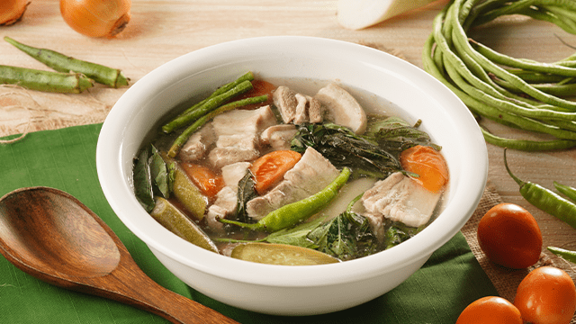
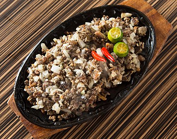
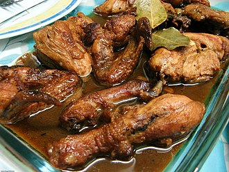
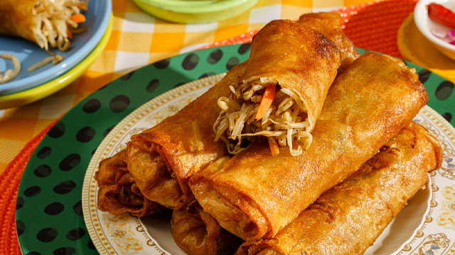

My Top 5 Favorite Foods
1. Sinigang

Sinigang is a sour soup that originated in the Philippines. The major ingredient in this recipe is pork. Other proteins and seafood can be used as well. Sinigang is usually made using beef, shrimp, and fish. Sinampalukang manok, on the other hand, refers to the chicken variant. When making sinigang, I like to use either pig belly or buto-buto. The latter refers to cuts with unbroken bones. These are either chopped spare ribs, chopped pork neck bones, or chopped baby back ribs. Sinigang can also be made with pork shoulder and ham.
2. Sisig

Sisig is a Filipino dish made from swine jowls and ears (maskara), pork belly, and chicken liver that is typically seasoned with calamansi, onions, and chili peppers. It is from the Pampanga region of Luzon.
3. Adobo

Adobo is a famous Filipino dish and cooking method that involves marinating meat, seafood, or vegetables in vinegar, soy sauce, garlic, bay leaves, and black peppercorns before browning in oil and simmering in the marinade. It has been referred to as the Philippines' unofficial national dish on occasion.
4. Lumpiang Togue

Lumpiang togue was probably filled with veggies like togue or bean sprouts, carrots, cabbage, green beans, singkamas or jicama, and shrimps. With its aromas, textures, and even the sauce poured with it, this lumpiang togue recipe attempts to replicate the flavors of that memorable lumpia from long ago. It is also one of six recipes we are showcasing as one of your favorite karinderya recipes. This karinderya meal, one of Yummy's October digital cover dishes, is sure to fulfill your love for all things food on Yummy.
5. Bicol Express

Bicol express is a classic Filipino cuisine that originated in Bicol but is now popular among Filipinos worldwide. It's a pork stew with chiles and coconut milk. Bicol Express is named after the passenger rail service that runs from Manila to the Bicol area of the Philippines, which is known for its spicy cuisine. It's incredibly rich in coconut cream and, sure, very spicy, but it's also addictive and very simple to make. The higher the temperature, the better!